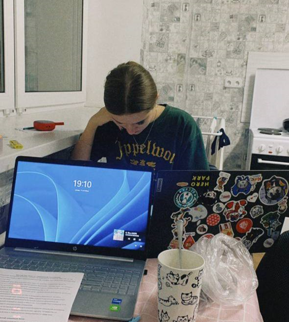
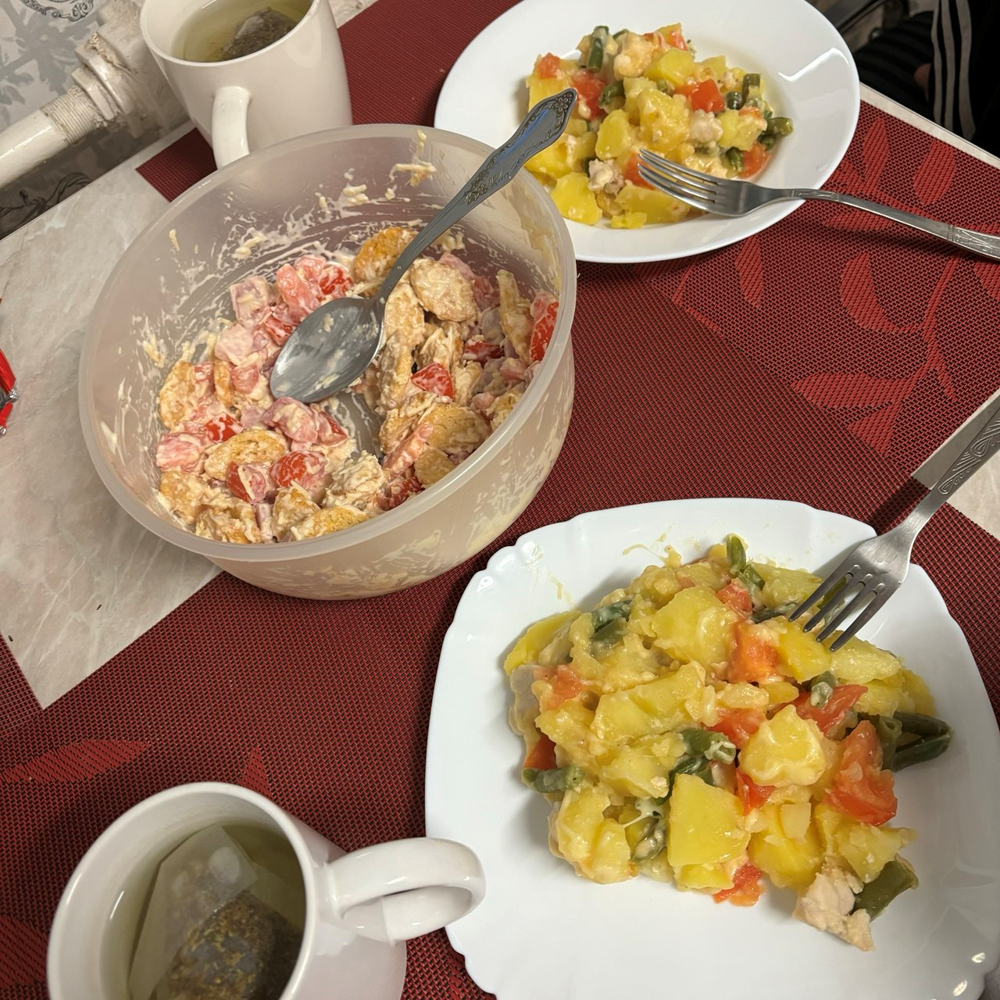
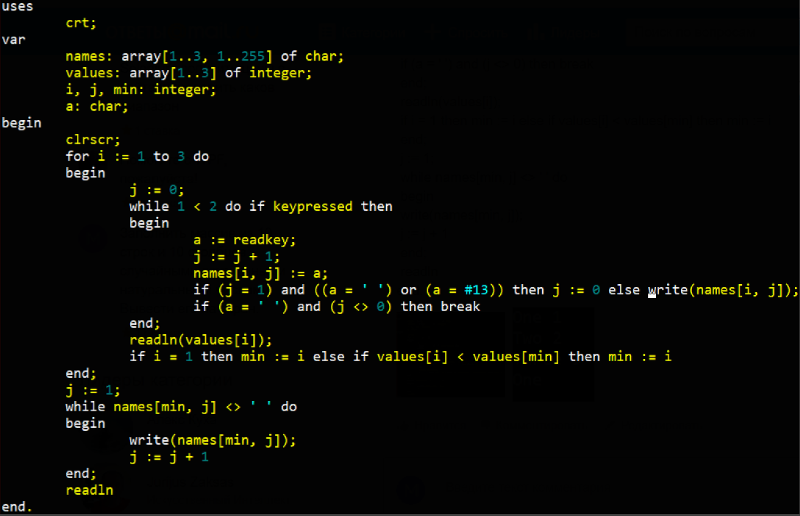

Обо мне
Мои хобби
Моё портфолио
СТЕФАНОВИЧ ВЛАДИСЛАВА
все о моих хобби и любых занятиях тут
МОИ ХОББИ

Web-design
Занимаюсь веб-дизайном с 2020 года, а сделанных проектов десятки: от сайта строительной компании до лендинга мастера по татуажу.
Читаю книги
Мои самые любимые книги - английская классика. А самая любимая писатель - Джейн Остин. А книга - Гордость и предубеждение.

Готовлю с Дашей
Мы каждый день готовим разные блюда, чтобы наше питание было разнообразным. Ведь в обащаге сложно следить за питанием.
ЗА 2 ГОДА В АКАДЕМИИ Я НАУЧИЛАСЬ...
Приходить вовремя на пары
Раньше у меня были проблемы с тем, чтобы приходить вовремя на пары, но теперь я всегда прихожу за 10 минут до начала

Писать код
Вам нужно написать код? Обращайтесь ко мне! Спасибо Академии)
Делать все вовремя
Из-за того, чтобы лабы нужно сдавать в определенный срок, я не накапливаю долги.